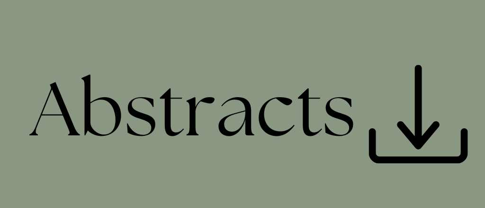

Program

Registration & Refreshments
Location: Science Atrium
8:30-9:00 –9:00
Welcome Remarks
Location: Science Atrium
8:50-9:00 –9:00
Panel 1: Sustainable Pathways and Futures
Moderated by: ---
Location: Science Atrium
9:00 –9:50
“Teaching and Learning for Sustainability: Lessons from Canadian Higher Education Institutions” Stephanie Letite “Finding Your Place in Campus Sustainability” Ellen Buckie "Roots of Growth: Integrating Blackfoot Traditional Ecological Knowledge to Create Sustainability" Tyler Lily Mitchell
Panel 2: Eco-Histories
Moderated by: ---
Location: Science Atrium
Zoom link: Join via Zoom
10:45 –10:45
"A Way Through: Early Euro-Canadian Travels over the Great Divide & Relations with the Îethka Nakoda Wîcastabi (Stoney Nakoda)” David Marks “Archives, Folklore, and Experiences of Landscape: Mapping the History of Forests in Duhallow, Ireland” Lily Overacker “Confluences of Environment and Culture on Canadian Beer Labels to 1950” Stephanie Hamilton
Panel 3: Weaving Blackfoot and Kaqchikel Maya Traditional Ecological Knowledge for Land Restoration
Moderated by: ---
Location: S8003
Zoom link: Join via Zoom
10:50 –12:00
Presenters Jordan David, Linakay Mountain Horse, Blair Many Fingers, Katie-Jo Rabbit
Lunch and Posters
Location: Science Atrium
12:00 –12:45
“Roots of Growth: Mapping Extractive and Regenerative Flows Through Interactive Environmental Storytelling” Shara Merrill “The Lorax Question: Who Speaks for the Trees?” Erika Dewald
Panel 4:Connections and Flows
Introduction by: Jocelyn McKnight
Location: Science Atrium
Zoom link: Join via Zoom
12:45 –2:15
“Rescaling Time-Spaces in Ozeki’s A Tale for the Time Being” Anna Butler-Koo “Agential Connections: How Eden Robinson’s “Queen of the North”Addresses the Wounds of Colonialism Through Empathetic Reciprocity” Lula Arias “Animals in a Productive Society: What Thomas Nagel’s ‘What is it Like to Be a Bat?' says about Peter Brown’s The Wild Robot” Shaylynn Levandosky “Language standardization and AI Hegemony” Iftekhar Khalid “Who Benefits from the Flow? A Constructal Reading of Extractive and Regenerative Systems” Shara Merrill
Panel 5: Eco-Visions
Moderated by: Jay Gamble
Location: Science Atrium
Zoom link: Join via Zoom
2:20 –3:20
“What the Wind Saw” Jay Gamble “The Birds are Singing” Dori Miller “Sabotage” Ainsley Pike “Beware of Rattlesnakes” Ytzel Velarde “Stars and Astral Bodies” Alex Sasyniuk
Panel 5: Blackfoot Language and the Poetics of Traditional Ecological Knowledge
Moderated by: Patrick Wilson
Location: Science Atrium
Zoom link: Join via Zoom
2:25 –3:55
Native and Invasive Species as Seen through the Blackfoot Language Ninna Piiksii (Dr. Mike Bruised Head) Kitáwahsinnooni ki I’pówahsin. Land and Language Api’soomaahka (William Singer III) Aokakio’sato’p Ksaahkoyi: Land-based Environmental Education for Stewardship of the Land A’poyaakii (Amanda Fox) & Mía’nístsínihkíaakii (Caroline Russell)
Panel 6: Wilderness of Mind
Moderated by: Natasha Rebry
Location: Science Atrium
Zoom link: Join via Zoom
4:05 –5:20
Cognition, Ecology, and Tok Pisin Jocelyn McKnight “The Peace of Wild Things”: A Case For Environmental Poetry in the Anthropocene Indie Verona MacGarva Backyard Wilderness Leila Armstrong Mushrooms at the End of the World: Infecting the Anthropocene with Fungal Eco-Horror Natasha Rebry Coulthard
Closing Remarks & Awards
Location: Science Atrium
5:20 –5:30